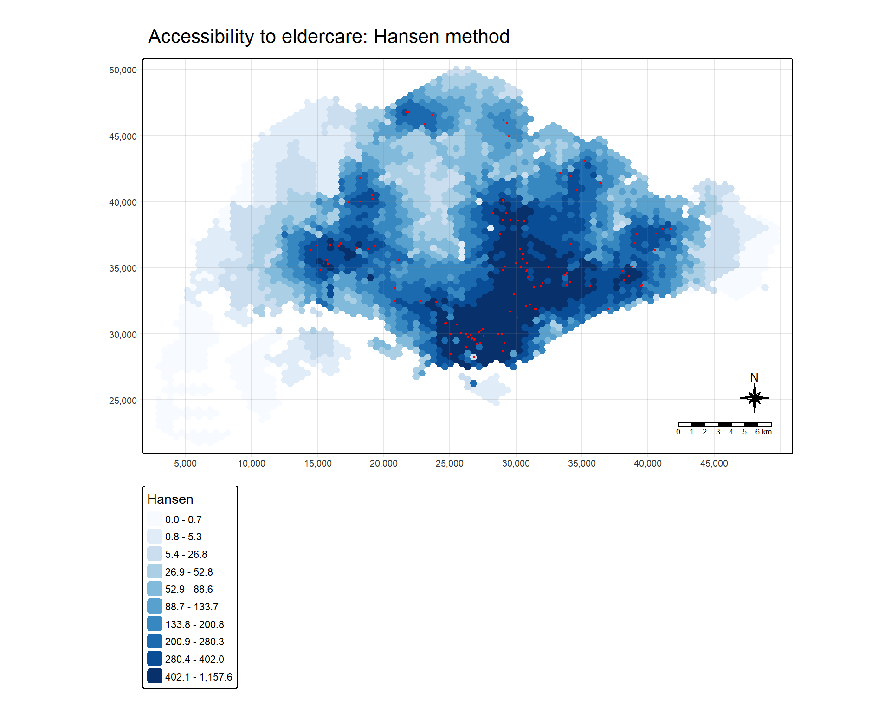
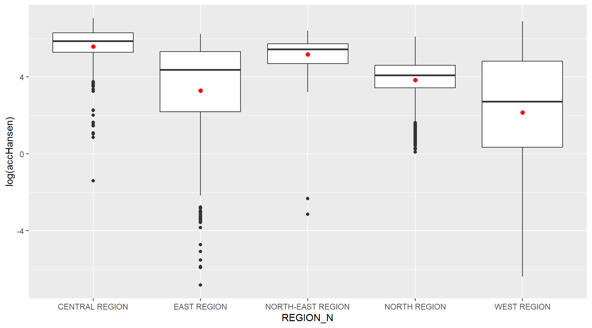
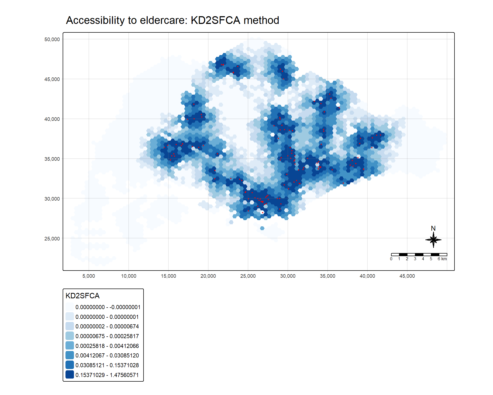
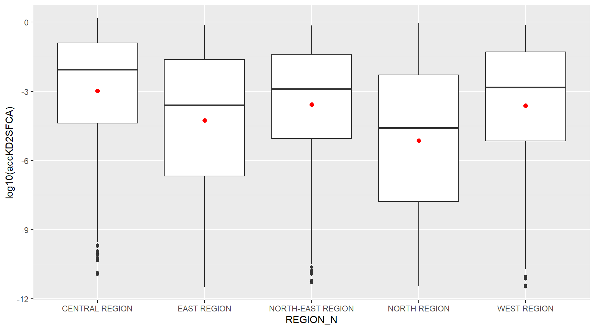
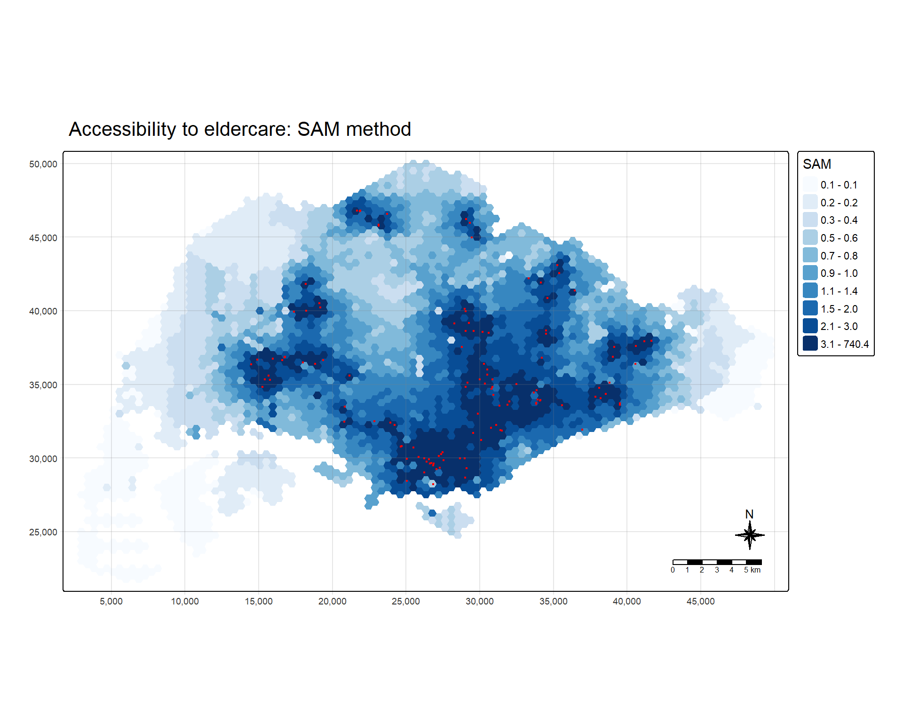
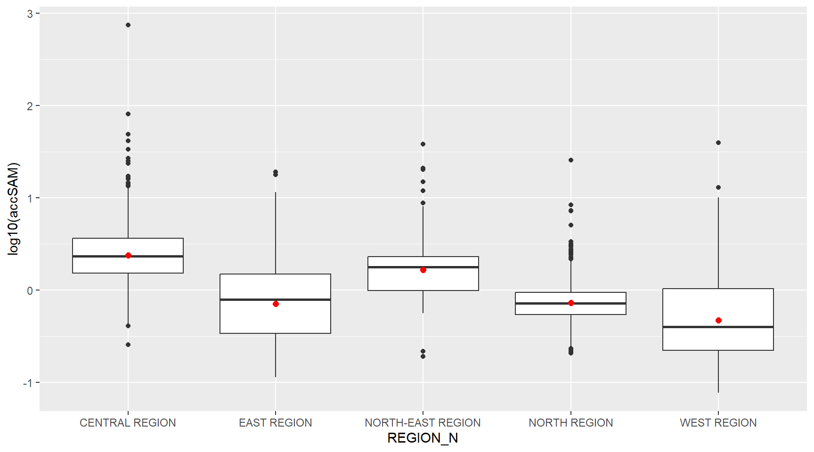

pacman::p_load(sf, tidyverse, SpatialAcc, tmap)Hands-on Exercise 7: Modelling Geographical Accessibility
Overview
Accessibility is not a property of a place on its own. It is a property of the relationship between where people are, where the services they need are, and how costly it is to move between the two. A hospital is not accessible or inaccessible; it is accessible from somewhere, by some mode, in competition with everybody else who might use it.
This exercise models accessibility to eldercare services in Singapore from a 3,125-cell hexagon grid, using a pre-computed road-network distance matrix of 375,000 origin-destination pairs. Three families of measure are applied to exactly the same inputs:
- the Hansen potential model, which sums the capacity of every facility discounted by a distance-decay function and ignores competition for that capacity,
- the kernel density two-step floating catchment area (KD2SFCA) method, which divides each facility’s capacity among the demand that can reach it and then truncates the catchment at a threshold distance, and
- the spatial accessibility measure (SAM), which keeps the competition term but softens the hard catchment boundary.
Because the three run on identical demand, capacity and distance inputs, any difference in their output is attributable to the formula alone. That is what makes the comparison informative rather than merely repetitive.
可达性不是一个地方自身的属性，而是三者关系的属性：人在哪里、所需服务在哪里、以及两点之间移动的代价有多大。一家医院无所谓「可达」或「不可达」；它只能是从某处出发、以某种方式、并且与所有可能使用它的人竞争之下的可达。
本练习以 3,125 个六边形网格为起点，用一份预先算好的、含 375,000 对起讫点的路网距离矩阵，对新加坡的乐龄服务设施建模可达性。三族测度作用在完全相同的输入上：
- Hansen 潜能模型，把每处设施的容量按距离衰减函数折减后求和，不考虑对该容量的竞争；
- 核密度两步移动搜寻域法（KD2SFCA），先把每处设施的容量分摊给能到达它的需求，再在阈值距离处截断搜寻域；
- 空间可达性测度（SAM），保留竞争项，但把生硬的搜寻域边界放缓。
由于三者跑在相同的需求、容量与距离输入之上，输出上的任何差异都只能归因于公式本身。正是这一点让这组对比具有信息量，而不只是重复三遍。
By the end of the exercise the following are in place:
练习结束时应当完成：
- three geospatial layers imported, given a consistent coordinate reference system, and reduced to the fields the models need,
- a 375,000-row origin-destination table reshaped into a 3,125 × 120 distance matrix whose row and column order is enforced rather than assumed,
- accessibility surfaces computed under Hansen, KD2SFCA and SAM and mapped on a common extent,
- the sensitivity of the Hansen result to its distance-decay exponent quantified, and
- accessibility compared across Singapore’s five planning regions.
- 导入三个地理空间图层，统一坐标参考系统，并裁减到模型所需的字段；
- 把 375,000 行的起讫点表重塑为 3,125 × 120 的距离矩阵，其行列顺序是被强制对齐的，而不是假定成立的；
- 在 Hansen、KD2SFCA 与 SAM 三种设定下计算可达性面，并在同一地图范围内制图；
- 量化 Hansen 结果对其距离衰减指数的敏感性；
- 在新加坡五个规划区之间比较可达性。
The Data
Four datasets are used, three geospatial and one aspatial.
MP14_SUBZONE_NO_SEA_PL, the URA Master Plan 2014 subzone boundaries with the sea polygons removed. It contributes no input to the models; it supplies the planning-region label used to summarise the results at the end of each section.hexagons, a regular hexagonal grid of 3,125 cells covering the land area of Singapore. Each cell has an apothem of 250 m, a side of 289 m, and an area of 216,506 m²; together they cover 676.6 km². The grid is the set of demand locations.ELDERCARE, 120 eldercare service points supplied by the Singapore Land Authority. These are the supply locations.OD_Matrix.csv, 375,000 rows, one for every pairing of the 3,125 hexagons with the 120 eldercare points. The fieldtotal_costis the road-network travel distance in metres, decomposed in the other fields into an entry cost, a network cost and an exit cost.
The distance matrix being supplied pre-computed is what makes the exercise tractable: building it would require a routable road network and 375,000 shortest-path queries.
共用到四份数据，三份地理空间、一份非空间。
MP14_SUBZONE_NO_SEA_PL，市区重建局 2014 年总体规划的分区边界，已去除海域多边形。它不向模型提供任何输入，只提供规划区标签，用于在每一节末尾汇总结果。hexagons，覆盖新加坡陆域的 3,125 个规则六边形网格。每格边心距 250 m、边长 289 m、面积 216,506 m²，合计覆盖 676.6 km²。该网格即需求点集合。ELDERCARE，新加坡土地管理局提供的 120 个乐龄服务设施点，即供给点。OD_Matrix.csv，375,000 行，对应 3,125 个六边形与 120 个设施点的每一种配对。字段total_cost是以米为单位的路网出行距离，其余字段把它分解为进入成本、路网成本与离开成本。
距离矩阵是预先算好给出的，这正是本练习得以可行的原因：自行构建它需要一个可路由的道路网络和 375,000 次最短路径查询。
Getting Started
Four packages carry the work. sf handles the vector layers and the coordinate reference system, tidyverse the table reshaping, SpatialAcc the accessibility formulas themselves, and tmap the cartography.
四个包承担全部工作。sf 处理矢量图层与坐标参考系统，tidyverse 负责表格重塑，SpatialAcc 提供可达性公式本身，tmap 负责制图。
Maps are drawn in static mode. An interactive map of 3,125 polygons ships every vertex of every hexagon to the browser, and the resulting page is far heavier than the figures justify.
地图以静态模式绘制。3,125 个多边形的交互地图会把每个六边形的每个顶点都发送到浏览器，由此产生的页面重量远超这些图所值。
tmap_mode("plot")Geospatial Data Wrangling
Importing geospatial data
The three layers are read with st_read(). Each is reported on import so that the count, the geometry type and the declared coordinate reference system are visible before anything is computed from them.
三个图层用 st_read() 读入。每一个在导入时都打印其要素数、几何类型与所声明的坐标参考系统，以便在据此计算任何东西之前先看清楚。
mpsz <- st_read(dsn = "data/geospatial", layer = "MP14_SUBZONE_NO_SEA_PL")Reading layer `MP14_SUBZONE_NO_SEA_PL' from data source
`C:\Users\Imgigi\Desktop\629\hand-on-ex\hand-on-ex7\data\geospatial'
using driver `ESRI Shapefile'
Simple feature collection with 323 features and 15 fields
Geometry type: MULTIPOLYGON
Dimension: XY
Bounding box: xmin: 2667.538 ymin: 15748.72 xmax: 56396.44 ymax: 50256.33
Projected CRS: SVY21hexagons <- st_read(dsn = "data/geospatial", layer = "hexagons")Reading layer `hexagons' from data source
`C:\Users\Imgigi\Desktop\629\hand-on-ex\hand-on-ex7\data\geospatial'
using driver `ESRI Shapefile'
Simple feature collection with 3125 features and 6 fields
Geometry type: POLYGON
Dimension: XY
Bounding box: xmin: 2667.538 ymin: 21506.33 xmax: 50010.26 ymax: 50256.33
Projected CRS: SVY21 / Singapore TMeldercare <- st_read(dsn = "data/geospatial", layer = "ELDERCARE")Reading layer `ELDERCARE' from data source
`C:\Users\Imgigi\Desktop\629\hand-on-ex\hand-on-ex7\data\geospatial'
using driver `ESRI Shapefile'
Simple feature collection with 120 features and 19 fields
Geometry type: POINT
Dimension: XY
Bounding box: xmin: 14481.92 ymin: 28218.43 xmax: 41665.14 ymax: 46804.9
Projected CRS: SVY21 / Singapore TMThree counts matter downstream: 323 subzones, 3,125 hexagons and 120 eldercare points. The last two set the shape of the distance matrix, and a mismatch between them and the matrix is the single most consequential error available in this workflow.
有三个数量在后续起作用：323 个分区、3,125 个六边形、120 个乐龄设施点。后两者决定了距离矩阵的形状，而它们与矩阵之间的不匹配，是本工作流中后果最严重的一种错误。
Updating CRS information
All three layers are assigned EPSG:3414, SVY21 / Singapore TM.
三个图层统一指定为 EPSG:3414，即 SVY21 / Singapore TM。
mpsz <- st_transform(mpsz, 3414)
eldercare <- st_transform(eldercare, 3414)
hexagons <- st_transform(hexagons, 3414)st_crs(mpsz)Coordinate Reference System:
User input: EPSG:3414
wkt:
PROJCRS["SVY21 / Singapore TM",
BASEGEOGCRS["SVY21",
DATUM["SVY21",
ELLIPSOID["WGS 84",6378137,298.257223563,
LENGTHUNIT["metre",1]]],
PRIMEM["Greenwich",0,
ANGLEUNIT["degree",0.0174532925199433]],
ID["EPSG",4757]],
CONVERSION["Singapore Transverse Mercator",
METHOD["Transverse Mercator",
ID["EPSG",9807]],
PARAMETER["Latitude of natural origin",1.36666666666667,
ANGLEUNIT["degree",0.0174532925199433],
ID["EPSG",8801]],
PARAMETER["Longitude of natural origin",103.833333333333,
ANGLEUNIT["degree",0.0174532925199433],
ID["EPSG",8802]],
PARAMETER["Scale factor at natural origin",1,
SCALEUNIT["unity",1],
ID["EPSG",8805]],
PARAMETER["False easting",28001.642,
LENGTHUNIT["metre",1],
ID["EPSG",8806]],
PARAMETER["False northing",38744.572,
LENGTHUNIT["metre",1],
ID["EPSG",8807]]],
CS[Cartesian,2],
AXIS["northing (N)",north,
ORDER[1],
LENGTHUNIT["metre",1]],
AXIS["easting (E)",east,
ORDER[2],
LENGTHUNIT["metre",1]],
USAGE[
SCOPE["Cadastre, engineering survey, topographic mapping."],
AREA["Singapore - onshore and offshore."],
BBOX[1.13,103.59,1.47,104.07]],
ID["EPSG",3414]]It is worth being precise about what that call did. hexagons and ELDERCARE already carried EPSG:3414, so for them it was a no-op. MP14_SUBZONE_NO_SEA_PL arrived with a projection file that spells out the Singapore TM parameters in full (central meridian 103.833°, false easting 28,001.642 m, false northing 38,744.572 m) but names no EPSG authority code, so sf reported its CRS as the bare string SVY21. The transform therefore attaches the authority code; the coordinates themselves move by zero metres, which the bounding box confirms.
这一步到底做了什么，值得说清楚。hexagons 与 ELDERCARE 本来就带着 EPSG:3414，对它们而言这是空操作。MP14_SUBZONE_NO_SEA_PL 带来的投影文件把 Singapore TM 的参数写全了——中央经线 103.833°、东偏 28,001.642 m、北偏 38,744.572 m——却没有写明 EPSG 代码，所以 sf 把它的 CRS 报成光秃秃的 SVY21。因此这次转换是在补上权威代码；坐标本身位移为零米，边界框可以确认这一点。
identical(
round(as.numeric(st_bbox(mpsz)), 6),
round(as.numeric(st_bbox(st_transform(mpsz, 3414))), 6)
)[1] TRUECleaning and updating attribute fields of the geospatial data
ELDERCARE arrives with nineteen attribute fields and hexagons with six; the models need one identifier and one quantity from each. The supply layer keeps its postal code as a human-readable label and gains a capacity field; the demand layer keeps its identifier and gains a demand field.
ELDERCARE 带有十九个属性字段，hexagons 带有六个；模型从每一个里只需要一个标识符和一个数量。供给图层保留邮政编码作为可读标签，并新增 capacity 字段；需求图层保留标识符，并新增 demand 字段。
eldercare <- eldercare %>%
select(fid, ADDRESSPOS) %>%
mutate(capacity = 100)hexagons <- hexagons %>%
select(fid) %>%
mutate(demand = 100)Both constants are placeholders, and the analysis should be read with that in mind. Setting every capacity to 100 asserts that all 120 eldercare centres are the same size; setting every demand to 100 asserts that the elderly population is spread uniformly across the island. Neither is true. What survives the assumption is the geometry of accessibility, the pattern produced by where the facilities are and how the road network connects them, and that is what the three models are being compared on here. Substituting real licensed places and a gridded elderly population count would change the numbers everywhere without changing any of the code below.
这两个常数都是占位值，解读分析时须记住这一点。把每个 capacity 都设为 100，等于断言 120 家乐龄中心规模相同；把每个 demand 都设为 100，等于断言老年人口在全岛均匀分布。两者都不成立。在这一假设下仍然成立的，是可达性的几何结构——由设施位置及道路网络的连接方式所产生的格局——而这正是此处三个模型所比较的对象。换成真实的核定床位数和网格化的老年人口计数，各处数值都会改变，但下文的代码一行都不必动。
Aspatial Data Handling and Wrangling
Importing Distance Matrix
The origin-destination table is read as an ordinary CSV.
起讫点表按普通 CSV 读入。
ODMatrix <- read_csv("data/aspatial/OD_Matrix.csv", skip = 0)glimpse(ODMatrix)Rows: 375,000
Columns: 6
$ origin_id <dbl> 1, 1, 1, 1, 1, 1, 1, 1, 1, 1, 1, 1, 1, 1, 1, 1, 1, 1, 1…
$ destination_id <dbl> 1, 2, 3, 4, 5, 6, 8, 9, 10, 11, 12, 13, 14, 15, 16, 18,…
$ entry_cost <dbl> 667.9336, 667.9336, 667.9336, 667.9336, 667.9336, 667.9…
$ network_cost <dbl> 19846.87, 45026.76, 17644.17, 36009.56, 31068.09, 31194…
$ exit_cost <dbl> 47.64874, 31.87162, 173.47882, 92.19676, 64.62840, 117.…
$ total_cost <dbl> 20562.45, 45726.57, 18485.58, 36769.69, 31800.65, 31979…total_cost is the sum of the entry, network and exit costs and ranges from 37 m to 56,351 m. The upper figure is about the length of Singapore’s longest road journey, which is the check that confirms the units are metres rather than seconds: 56,351 seconds would be more than fifteen hours.
total_cost 是进入、路网与离开三项成本之和，取值范围 37 m 至 56,351 m。上限大致相当于新加坡最长的一次道路出行，这正是确认单位为米而非秒的依据：56,351 秒超过十五小时。
Tidying distance matrix
ac() expects the distances as a matrix with one row per demand location and one column per supply location, so the 375,000-row long table has to be pivoted into a 3,125 × 120 wide one.
ac() 要求距离以矩阵形式给出，每行一个需求点、每列一个供给点，因此这张 375,000 行的长表必须透视成 3,125 × 120 的宽表。
distmat <- ODMatrix %>%
select(origin_id, destination_id, total_cost) %>%
pivot_wider(names_from = destination_id, values_from = total_cost) %>%
arrange(origin_id)The pivot is the step at which this workflow can fail silently, and it is worth being explicit about why. ac() receives three objects that have no identifiers attached to them once they are inside the function: a vector of demand, a vector of capacity, and a matrix of distances. It matches them by position. Row i of the matrix is assumed to be the same place as element i of the demand vector, and column j the same place as element j of the capacity vector. Nothing checks that assumption.
The identifiers here make that a live concern rather than a theoretical one. The 120 eldercare points carry fid values running from 1 to 133 with thirteen numbers missing: 7, 17, 51, 54, 57, 58, 59, 60, 62, 65, 70, 97 and 102 are absent. A pivot names its new columns after the values it found and orders them as it pleases. If that order and the row order of eldercare ever diverged, every accessibility value computed afterwards would be wrong, no error would be raised, and the maps would look entirely plausible.
So the ordering is imposed rather than hoped for: the columns are selected in the exact order of eldercare$fid, and the result is asserted before it is used.
透视这一步正是本工作流可能悄无声息出错的地方，值得把原因说明白。ac() 收到的三个对象，一旦进入函数内部便不再携带任何标识符：一个需求向量、一个容量向量、一个距离矩阵。它靠位置来匹配三者——矩阵第 i 行被认定与需求向量第 i 个元素是同一个地方，第 j 列与容量向量第 j 个元素是同一个地方。没有任何机制去检验这个假定。
本例中的标识符让这件事从理论隐患变成现实隐患。120 个乐龄设施点的 fid 从 1 排到 133，中间缺了十三个号——7、17、51、54、57、58、59、60、62、65、70、97、102 都不存在。透视会以它找到的值为新列命名，并按它自己的规则排序。一旦这个顺序与 eldercare 的行序出现分歧，此后算出的每一个可达性数值都会是错的，却不会抛出任何错误，而地图看起来完全合理。
因此顺序是被强制施加的，而不是指望它成立：列按 eldercare$fid 的确切顺序选取，并在使用之前先行断言。
distmat <- distmat[, c("origin_id", as.character(eldercare$fid))]
stopifnot(
identical(as.numeric(names(distmat)[-1]), as.numeric(eldercare$fid)),
identical(as.numeric(distmat$origin_id), as.numeric(hexagons$fid))
)With the alignment guaranteed, the identifier column is dropped and the costs are converted from metres to kilometres. The unit change is not cosmetic: the decay term in every one of these models is a power of distance, so working in metres rather than kilometres rescales the output by a factor of 1,000 raised to that power.
对齐得到保证之后，去掉标识符列，并把成本从米换算为千米。单位的改变并非外观问题：这些模型中的衰减项都是距离的幂，因此用米而不是千米会把输出按 1,000 的相应次幂重新缩放。
distmat_km <- as.matrix(distmat[, -1] / 1000)
dim(distmat_km)[1] 3125 120range(distmat_km)[1] 0.03692728 56.35081926Modelling and Visualising Accessibility using Hansen Method
Computing Hansen’s accessibility
The Hansen potential model gives each demand location the sum of every facility’s capacity, each discounted by the distance to it raised to a negative power. There is no competition term: two hexagons that are the same distance from the same facilities receive the same score regardless of how many other people are also close to them.
The exponent is the one free parameter, and it is not innocuous. It is run here at two values.
Hansen 潜能模型给每个需求点的得分，是所有设施容量之和，每一项按到它的距离的负幂折减。模型中没有竞争项：两个与同一批设施距离相同的六边形会得到相同的分数，不论还有多少人同样靠近它们。
指数是唯一的自由参数，而它并不是无关紧要的。这里用两个取值分别运行。
acc_Hansen_p2 <- data.frame(
ac(hexagons$demand,
eldercare$capacity,
distmat_km,
power = 2,
family = "Hansen"))
colnames(acc_Hansen_p2) <- "accHansen_p2"acc_Hansen <- data.frame(
ac(hexagons$demand,
eldercare$capacity,
distmat_km,
power = 0.5,
family = "Hansen"))
colnames(acc_Hansen) <- "accHansen"
acc_Hansen <- as_tibble(acc_Hansen)hexagon_Hansen <- bind_cols(hexagons, acc_Hansen, acc_Hansen_p2)The two exponents produce distributions on entirely different scales. At power = 2 the median hexagon scores 0.068 and the range runs from 7.8 × 10⁻²⁵ to 197.7; at power = 0.5 the median is 88.7 and the range is 0.0011 to 1,158. An exponent of 2 makes distance punishing, since doubling the distance divides the contribution by four, so almost all of a hexagon’s score comes from the handful of facilities nearest it. An exponent of 0.5 makes distance mild, and the whole island’s supply contributes.
两个指数产生的分布尺度完全不同。power = 2 时，中位六边形得分 0.068，取值范围从 7.8 × 10⁻²⁵ 到 197.7；power = 0.5 时中位数为 88.7，范围是 0.0011 到 1,158。指数取 2 使距离的惩罚很重——距离加倍，贡献除以四——因此一个六边形的得分几乎全部来自离它最近的少数几处设施。指数取 0.5 则使距离的作用变得温和，全岛的供给都会有所贡献。
summary(hexagon_Hansen$accHansen_p2) Min. 1st Qu. Median Mean 3rd Qu. Max.
0.00000 0.00003 0.06828 5.41900 2.54305 197.70324 summary(hexagon_Hansen$accHansen) Min. 1st Qu. Median Mean 3rd Qu. Max.
1.080e-03 1.371e+01 8.872e+01 1.550e+02 2.399e+02 1.158e+03 The question that matters is not whether the numbers differ, which they must, but whether the two exponents disagree about which places are well served. Rank correlation answers it directly.
真正要紧的问题不是数值是否不同——它们必然不同——而是两个指数对哪些地方服务良好这一点是否存在分歧。秩相关可以直接回答。
cor(hexagon_Hansen$accHansen, hexagon_Hansen$accHansen_p2,
method = "spearman")[1] 0.9518166top100 <- function(x) order(x, decreasing = TRUE)[1:100]
length(intersect(top100(hexagon_Hansen$accHansen),
top100(hexagon_Hansen$accHansen_p2)))[1] 44A Spearman correlation of 0.95 says the two orderings broadly agree, and if the purpose were to split the island into well-served and poorly-served halves the choice of exponent would hardly matter. But only 44 of the top 100 hexagons are common to both. If the purpose is to identify the best-served locations, which is the usual reason for computing this surface at all, then the exponent decides more than half the answer. It is a parameter to be justified, not left at a default.
The remainder of this section uses the power = 0.5 surface.
0.95 的 Spearman 相关说明两套排序大体一致；若目的只是把全岛分成服务良好与服务不佳两半，指数的选择几乎无关紧要。但排名前 100 的六边形中，两者只有 44 个重合。若目的是识别服务最好的位置——而这通常正是计算这个面的原因——那么指数就决定了一半以上的答案。它是一个需要论证的参数，不该停留在默认值上。
本节余下部分使用 power = 0.5 的结果面。
Visualising Hansen’s accessibility
Extracting map extent
All the maps in this exercise are drawn on the bounding box of the hexagon grid, so that the three surfaces can be laid side by side and compared without the frame shifting between them.
本练习中所有地图都以六边形网格的边界框为范围绘制，这样三个结果面可以并排比较，而画框不会在它们之间移位。
mapex <- st_bbox(hexagons)tm_shape(hexagon_Hansen, bbox = mapex) +
tm_polygons(fill = "accHansen",
col = NULL,
fill.scale = tm_scale_intervals(
style = "quantile",
n = 10,
values = "brewer.blues"),
fill.legend = tm_legend(title = "Hansen")) +
tm_shape(eldercare) +
tm_dots(size = 0.15,
fill = "red",
col = "black") +
tm_title("Accessibility to eldercare: Hansen method") +
tm_layout(frame = TRUE) +
tm_compass(type = "8star", size = 2) +
tm_scalebar() +
tm_grid(alpha = 0.2)
The polygon borders are switched off with col = NULL. At 3,125 cells a drawn border occupies a visible share of each hexagon and the grid itself becomes the dominant texture of the map, which is not the variable being shown.
The surface is centred rather than concentric. Accessibility is highest through the central belt and the north-east, and falls away towards the west and the north-west. The red facility points explain most of it directly: where eldercare centres cluster, the hexagons around them are dark. The exceptions are the informative part: stretches of the west sit in the palest classes while still being within a few kilometres of a facility, because under a potential model being near one centre counts for much less than being near several.
多边形边界以 col = NULL 关闭。在 3,125 个格子的尺度上，画出的边界会占据每个六边形可见的一部分面积，网格本身反而成为地图的主导纹理，而那并不是要展示的变量。
这个面是向中心聚拢的，而不是同心环状。可达性在中部地带与东北部最高，向西与西北递减。红色的设施点直接解释了其中大部分：乐龄中心扎堆的地方，周围的六边形就深。例外之处才是有信息量的——西部有若干地带落在最浅的几级里，而它们离设施其实只有几公里，因为在潜能模型下，靠近一处中心的价值远低于靠近好几处。
Statistical graphic visualisation
To compare accessibility across Singapore’s five planning regions, the region label is joined onto each hexagon from the subzone layer.
为在新加坡五个规划区之间比较可达性，从分区图层把规划区标签连接到每个六边形上。
hexagon_Hansen <- st_join(hexagon_Hansen, mpsz,
join = st_intersects,
largest = TRUE)largest = TRUE is doing something necessary rather than decorative. A hexagon that straddles a subzone boundary intersects more than one subzone, and a plain intersects join emits one row per match: the 3,125 hexagons become 5,406 rows, with 2,281 of them duplicates. Every boundary-straddling hexagon would then be counted two or three times in the summaries below, weighting the comparison towards places that happen to sit on an administrative line. With largest = TRUE each hexagon is assigned to the single subzone it overlaps most, the row count stays at 3,125, and no hexagon is left unlabelled.
largest = TRUE 做的是一件必要的事，而非修饰。跨分区边界的六边形会与不止一个分区相交，而普通的 intersects 连接会为每一次匹配输出一行：3,125 个六边形变成 5,406 行，其中 2,281 行是重复。这样一来，每个跨边界的六边形在下面的汇总中都会被计入两到三次，使比较偏向那些恰好坐落在行政界线上的地方。加上 largest = TRUE 后，每个六边形被归到与它重叠面积最大的那个分区，行数保持 3,125，且没有六边形被漏标。
nrow(hexagon_Hansen)[1] 3125sum(is.na(hexagon_Hansen$REGION_N))[1] 0ggplot(data = hexagon_Hansen,
aes(y = log(accHansen),
x = REGION_N)) +
geom_boxplot() +
geom_point(stat = "summary",
fun = "mean",
colour = "red",
size = 2)
The vertical axis is logged because the raw values span five orders of magnitude; on a linear axis the four lower regions would collapse onto the floor of the plot. The red point is the mean of the logged values, which sits below the median wherever a region’s distribution has a long lower tail.
The ordering is unambiguous. Central and North-East are the well-served regions, with median Hansen scores of 353 and 229. East and North follow at 79 and 59. West is last at 15, more than twenty times below Central. The median road distance to the nearest eldercare centre tells the same story in units anyone can act on: 2.2 km in Central, 2.5 km in North-East, 4.3 km in East, 4.8 km in North, and 7.8 km in West.
纵轴取了对数，因为原始数值跨越五个数量级；若用线性轴，靠后的四个区会全部压在图的底部。红点是对数值的均值，凡是某区分布有较长下尾的，它都会落在中位数之下。
排序毫不含糊。中部与东北是服务良好的区域，Hansen 中位得分分别为 353 与 229。东部和北部随后，为 79 与 59。西部垫底，仅 15，不到中部的二十分之一。到最近乐龄中心的道路距离中位数讲的是同一件事，而且单位是人人都能据以行动的：中部 2.2 km、东北 2.5 km、东部 4.3 km、北部 4.8 km、西部 7.8 km。
Modelling and Visualising Accessibility using KD2SFCA Method
Computing KD2SFCA’s accessibility
The two-step floating catchment area family differs from the potential model in one structural respect: it divides a facility’s capacity among the demand that can reach it. A centre surrounded by many people therefore contributes less per person than an identical centre standing alone. The kernel density variant weights that division by a Gaussian kernel and truncates it at a threshold distance d0, set here to 5 km.
两步移动搜寻域这一族与潜能模型有一处结构性差异：它把设施容量分摊给能够到达它的需求。因此，一处周围人口众多的中心，其人均贡献低于一处同样大小、却孤立存在的中心。核密度变体用高斯核为这一分摊加权，并在阈值距离 d0 处截断，此处设为 5 km。
acc_KD2SFCA <- data.frame(
ac(hexagons$demand,
eldercare$capacity,
distmat_km,
d0 = 5,
power = 2,
family = "KD2SFCA"))
colnames(acc_KD2SFCA) <- "accKD2SFCA"
acc_KD2SFCA <- as_tibble(acc_KD2SFCA)
hexagon_KD2SFCA <- bind_cols(hexagons, acc_KD2SFCA)summary(hexagon_KD2SFCA$accKD2SFCA) Min. 1st Qu. Median Mean 3rd Qu. Max.
0.000e+00 0.000e+00 3.000e-08 3.840e-02 4.616e-03 1.476e+00 sum(hexagon_KD2SFCA$accKD2SFCA == 0)[1] 1281mean(hexagon_KD2SFCA$accKD2SFCA == 0) * 100[1] 40.992The truncation has a large and visible consequence. 1,281 hexagons, 41 per cent of the grid, receive an accessibility of exactly zero, because no eldercare centre lies within 5 km of them by road. The smallest nearest-facility distance among those cells is 5.01 km, which confirms that the zeros are produced by the threshold and not by anything in the data.
A zero here does not mean no eldercare service is reachable. It means none is reachable within the catchment the model was told to use. d0 is therefore a statement about what counts as a reasonable journey for an elderly person, and it should be chosen on that basis, because it determines the answer for two-fifths of the island.
截断带来了一个显著且可见的后果。有 1,281 个六边形——占网格的 41%——可达性正好为零，因为按道路计算，它们 5 km 以内没有任何乐龄中心。这批格子中最近设施距离的最小值是 5.01 km，这确认了这些零值由阈值造成，而非数据本身所致。
此处的零并不意味着没有任何乐龄服务可达，而是指在模型被告知采用的搜寻域内没有。因此 d0 是一个关于「对一位老年人而言怎样的行程算合理」的判断，应当据此来选取，因为它为全岛五分之二的面积决定了答案。
Visualising KD2SFCA’s accessibility
A ten-class quantile scheme cannot be used on this variable. With 41 per cent of the values tied at zero, the lowest four quantile breaks are all zero, and a classification with repeated breaks is not a classification. The classes are therefore built explicitly: one class holding the zeros, and seven quantile classes spanning the positive values.
这个变量不能用十级分位数方案。41% 的取值并列于零，最低的四个分位断点全是零，而断点重复的分级算不上分级。因此分级是显式构建的：一级容纳零值，另外七级按分位数划分正值部分。
pos <- hexagon_KD2SFCA$accKD2SFCA[hexagon_KD2SFCA$accKD2SFCA > 0]
brks <- unique(c(0, quantile(pos, probs = seq(0, 1, length.out = 8))))
signif(brks, 3)[1] 0.00e+00 3.27e-12 2.23e-08 6.75e-06 2.58e-04 4.12e-03 3.09e-02 1.54e-01
[9] 1.48e+00tm_shape(hexagon_KD2SFCA, bbox = mapex) +
tm_polygons(fill = "accKD2SFCA",
col = NULL,
fill.scale = tm_scale_intervals(
breaks = brks,
values = "brewer.blues"),
fill.legend = tm_legend(title = "KD2SFCA")) +
tm_shape(eldercare) +
tm_dots(size = 0.15,
fill = "red",
col = "black") +
tm_title("Accessibility to eldercare: KD2SFCA method") +
tm_layout(frame = TRUE) +
tm_compass(type = "8star", size = 2) +
tm_scalebar() +
tm_grid(alpha = 0.2)
The map is a different kind of object from the Hansen one. Hansen produced a smooth gradient over the whole island; KD2SFCA produces discrete islands of coverage around facility clusters, separated by a large connected zone of exact zeros. That difference is the 5 km threshold drawn in map form, and it is a more honest picture if the policy question is “who can reach a centre within a reasonable trip” rather than “who is relatively better placed than whom”.
这张图与 Hansen 那张在性质上就不同。Hansen 产生的是覆盖全岛的平滑梯度；KD2SFCA 产生的是围绕设施簇群的、离散的覆盖岛屿，中间被一大片连通的、取值恰为零的区域隔开。这种差异正是 5 km 阈值在地图上的形态。如果政策问题是「谁能在合理的行程内到达一处中心」，而不是「谁的相对位置比谁好」，那么它是一幅更诚实的图。
Statistical graphic visualisation
hexagon_KD2SFCA <- st_join(hexagon_KD2SFCA, mpsz,
join = st_intersects,
largest = TRUE)The regional comparison has to be made in two parts, because a logarithm cannot be taken of the zeros and dropping them silently would hide the main regional difference rather than show it. The share of unserved hexagons is reported first, then the distribution among the served ones.
区域比较必须分两部分进行：零值无法取对数，而悄悄把它们丢掉只会掩盖主要的区域差异，而不是呈现它。先报告未被覆盖的六边形占比，再看被覆盖者内部的分布。
hexagon_KD2SFCA %>%
st_drop_geometry() %>%
group_by(REGION_N) %>%
summarise(hexagons = n(),
unserved = sum(accKD2SFCA == 0),
pct_unserved = round(100 * mean(accKD2SFCA == 0), 1),
.groups = "drop") %>%
arrange(pct_unserved)# A tibble: 5 × 4
REGION_N hexagons unserved pct_unserved
<chr> <int> <int> <dbl>
1 NORTH-EAST REGION 321 15 4.7
2 CENTRAL REGION 605 56 9.3
3 EAST REGION 498 208 41.8
4 NORTH REGION 622 290 46.6
5 WEST REGION 1079 712 66 ggplot(data = filter(hexagon_KD2SFCA, accKD2SFCA > 0),
aes(y = log10(accKD2SFCA),
x = REGION_N)) +
geom_boxplot() +
geom_point(stat = "summary",
fun = "mean",
colour = "red",
size = 2)
The share of hexagons with no centre within 5 km runs from 4.7 per cent in North-East and 9.3 per cent in Central to 41.8 per cent in East, 46.6 per cent in North and 66.0 per cent in West. Two thirds of the western grid is outside the modelled catchment altogether.
Among the served cells the regional ordering is the same one Hansen produced, which is the useful cross-check: two formulas that treat competition quite differently nevertheless agree about the geography. KD2SFCA adds the threshold question on top of that agreement rather than overturning it.
5 km 内没有任何中心的六边形占比，从东北的 4.7%、中部的 9.3%，升到东部的 41.8%、北部的 46.6%、西部的 66.0%。西部网格有三分之二完全落在模型搜寻域之外。
在被覆盖的格子内部，区域排序与 Hansen 给出的一致——这正是有用的交叉验证：两个对竞争处理方式相当不同的公式，在地理格局上仍然一致。KD2SFCA 是在这一致之上追加了阈值这个问题，而不是推翻它。
Modelling and Visualising Accessibility using Spatial Accessibility Measure (SAM) Method
Computing SAM accessibility
SAM keeps the competition term that distinguishes the floating catchment family from the potential model, but applies the distance decay as a power function across the whole matrix rather than as a kernel truncated at d0. The parameters passed are the same ones used for KD2SFCA, so the comparison isolates the effect of that change.
SAM 保留了使移动搜寻域一族区别于潜能模型的竞争项，但其距离衰减是在整个矩阵上施加的幂函数，而不是在 d0 处截断的核。传入的参数与 KD2SFCA 相同，因此这组对比分离出的正是这一改动的效果。
acc_SAM <- data.frame(
ac(hexagons$demand,
eldercare$capacity,
distmat_km,
d0 = 5,
power = 2,
family = "SAM"))
colnames(acc_SAM) <- "accSAM"
acc_SAM <- as_tibble(acc_SAM)
hexagon_SAM <- bind_cols(hexagons, acc_SAM)summary(hexagon_SAM$accSAM) Min. 1st Qu. Median Mean 3rd Qu. Max.
0.07718 0.40249 0.86880 1.77638 1.82919 740.42209 sum(hexagon_SAM$accSAM == 0)[1] 0No hexagon scores zero. The median is 0.87 and the maximum 740. Removing the hard catchment boundary restores a value everywhere, at the cost of the clear statement about who is and is not within reach that KD2SFCA made.
没有六边形得零分。中位数为 0.87，最大值 740。去掉生硬的搜寻域边界后，处处都重新有了取值，代价是失去了 KD2SFCA 所作出的那个明确判断——谁在可及范围内、谁不在。
Visualising SAM’s accessibility
tm_shape(hexagon_SAM, bbox = mapex) +
tm_polygons(fill = "accSAM",
col = NULL,
fill.scale = tm_scale_intervals(
style = "quantile",
n = 10,
values = "brewer.blues"),
fill.legend = tm_legend(title = "SAM")) +
tm_shape(eldercare) +
tm_dots(size = 0.15,
fill = "red",
col = "black") +
tm_title("Accessibility to eldercare: SAM method") +
tm_layout(frame = TRUE) +
tm_compass(type = "8star", size = 2) +
tm_scalebar() +
tm_grid(alpha = 0.2)
Read against the Hansen map, this one is strikingly similar in pattern despite the competition term. The rank correlation between the two is 0.986, so the two surfaces order the 3,125 hexagons almost identically.
That result deserves an explanation rather than just a note, and the explanation is in the inputs. The competition term can only change the ranking if demand varies across space, because it works by dividing capacity among the demand that can reach a facility. Here every hexagon was assigned demand = 100. With demand uniform, the competition each facility faces is very nearly a function of how many hexagons are near it, which is itself close to a function of distance, so the term that was supposed to distinguish SAM from Hansen has little left to bite on. Supplying a real elderly population count per hexagon is what would make these two surfaces diverge, and it is the single most valuable extension of this exercise.
与 Hansen 那张图对照来读，尽管 SAM 含有竞争项，两者格局却惊人地相似。两者的秩相关为 0.986——两个面对 3,125 个六边形的排序几乎完全一致。
这个结果应当给出解释，而不是只记一笔，而解释就在输入之中。竞争项只有在需求随空间变化时才可能改变排序，因为它的作用方式是把容量分摊给能够到达该设施的需求。而此处每个六边形的 demand 都被设为 100。需求均匀时，每处设施面对的竞争几乎就是「附近有多少个六边形」的函数，而后者本身又接近是距离的函数——于是本该让 SAM 区别于 Hansen 的那一项，几乎无处着力。给每个六边形配上真实的老年人口计数，才会让这两个面分开，而这也是本练习最有价值的一项延伸。
Statistical graphic visualisation
hexagon_SAM <- st_join(hexagon_SAM, mpsz,
join = st_intersects,
largest = TRUE)ggplot(data = hexagon_SAM,
aes(y = log10(accSAM),
x = REGION_N)) +
geom_boxplot() +
geom_point(stat = "summary",
fun = "mean",
colour = "red",
size = 2)
Median SAM accessibility is 2.32 in Central, 1.77 in North-East, 0.79 in East, 0.72 in North and 0.40 in West, the same ordering on a third scale.
The three families can finally be compared on the one thing that matters for a planner, which is whether they would send resources to the same places.
SAM 可达性中位数为：中部 2.32、东北 1.77、东部 0.79、北部 0.72、西部 0.40——同样的排序，换到第三种尺度上。
至此，三族模型终于可以在对规划者而言唯一要紧的那一点上作比较：它们是否会把资源投向相同的地方。
accessibility <- tibble(
Hansen_p2 = hexagon_Hansen$accHansen_p2,
Hansen_p05 = hexagon_Hansen$accHansen,
KD2SFCA = hexagon_KD2SFCA$accKD2SFCA,
SAM = hexagon_SAM$accSAM)
round(cor(accessibility, method = "spearman"), 3) Hansen_p2 Hansen_p05 KD2SFCA SAM
Hansen_p2 1.000 0.952 0.962 0.950
Hansen_p05 0.952 1.000 0.905 0.986
KD2SFCA 0.962 0.905 1.000 0.909
SAM 0.950 0.986 0.909 1.000Every pairwise rank correlation sits between 0.905 and 0.986. On this data the choice among the three families changes the units, the shape of the distribution and the interpretation of a value, but it barely changes the ordering of places. The decisions that do change the answer are the ones made before any of them was called: the distance-decay exponent, which reshuffles more than half of the top 100 hexagons, and the catchment threshold, which determines whether 41 per cent of the island has an accessibility of zero or a small positive number.
Both of those are analyst choices, not properties of the data, and neither has a default worth trusting.
所有两两秩相关都落在 0.905 与 0.986 之间。在这份数据上，三族之间的选择改变了单位、分布形状以及对某个数值的解释，却几乎不改变地方的排序。真正改变答案的决定，是在调用它们之前就作出的：距离衰减指数，它重排了前 100 个六边形中的一半以上；以及搜寻域阈值，它决定了全岛 41% 的面积可达性是零还是一个很小的正数。
这两者都是分析者的选择，而非数据的属性，且都没有一个值得信任的默认值。
Reference
- Kam, T. S. R for Geospatial Data Science and Analytics, Chapter 17: Modelling Geographical Accessibility.
- Hansen, W. G. (1959) “How Accessibility Shapes Land Use”, Journal of the American Institute of Planners, 25(2): 73-76.
- Luo, W. and Wang, F. (2003) “Measures of Spatial Accessibility to Health Care in a GIS Environment: Synthesis and a Case Study in the Chicago Region”, Environment and Planning B, 30(6): 865-884.
- Dai, D. (2010) “Black Residential Segregation, Disparities in Spatial Access to Health Care Facilities, and Late-stage Breast Cancer Diagnosis in Metropolitan Detroit”, Health & Place, 16(5): 1038-1052.
- Long, J. (2017) “Modelling Accessibility”, in Wilson, J. P. (ed.) The Geographic Information Science & Technology Body of Knowledge.
- Joseph, A. E. and Bantock, P. R. (1982) “Measuring Potential Physical Accessibility to General Practitioners in Rural Areas: A Method and Case Study”, Social Science & Medicine, 16(1): 85-90.
- SpatialAcc: Spatial Accessibility Measures, the package used for
ac().